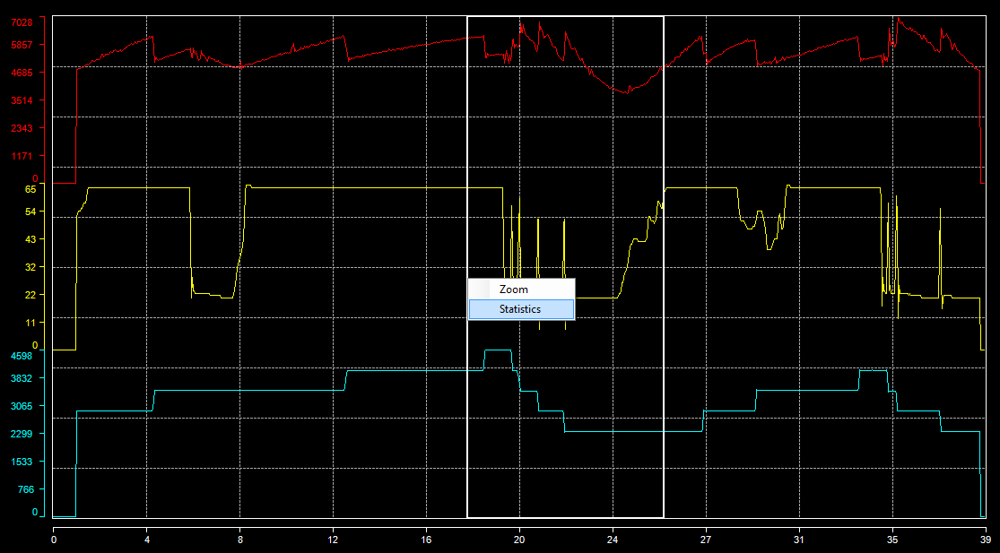

Another useful feature of the analysis window is statistics computation.
As per the zoom function, right click is graphic area and drag the zoom box up to end of area in which you want compute statistics. Release the mouse right button and click the 'Statistics' command of the contextual menu that has popped up. Prior to do that, make sure the zoom mode is not 'Zoom disabled', otherwise the zoom box will not appear.

The statistics window appears.

In this statistics windows we can find different statistics about plotted data
Those statistics can even be copied into the Windows clipboard in order to be pasted into an external application such as Microsoft Excel.
Select all cells of the statistics grid that are of your interest and press Ctrl+C on your keyboard. All selected cells values are now in the Windows clipboard and are ready to be used in any application accessing the clipboard.
Created with the Personal Edition of HelpNDoc: Full-featured Documentation generator